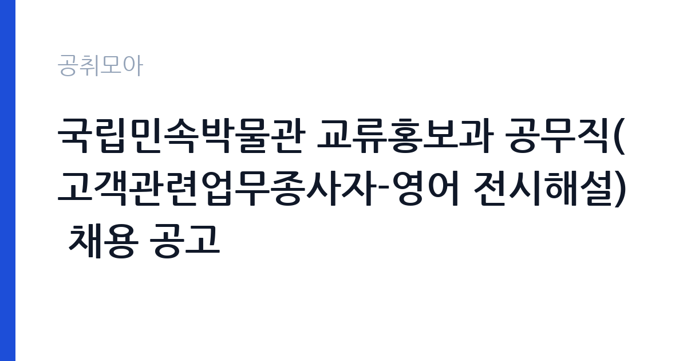

[국가기관] 국립민속박물관 교류홍보과 공무직(고객관련업무종사자-영어 전시해설) 채용 공고
문화체육관광부 국립민속박물관 · 서울 · 마감 2026-10-06 (D-14) · 출처 나라일터

한눈에 보는 모집 조건
| 기관 | 문화체육관광부 국립민속박물관 |
|---|---|
| 공고명 | 국립민속박물관 교류홍보과 공무직(고객관련업무종사자-영어 전시해설) 채용 공고 |
| 고용형태 | 공무직 |
| 근무지 | 서울 |
| 게시일 | 2026-09-22 |
| 마감일 | 2026-10-06 (D-14) |
지원자격, 이렇게 읽으세요
- 공무직 2명
- 접수 ~2026-10-06 마감
- 세부 조건은 원문 공고문 확인
채용 분야는 공무직 고객관련업무종사자(전시해설) 2명으로, 영어 전시해설이 가능한 분이 지원 대상입니다. 세부 자격과 어학 요건, 제출서류는 첨부파일에서 확인하셔야 합니다. 전시해설 경험이나 영어권 응대 경험이 있다면 자기소개서에 구체적으로 기술하시기 바랍니다. 이메일과 등기우편 접수가 모두 가능하므로 편한 방법을 선택하시기 바랍니다.
이 공고의 포인트
첫 번째 포인트는 영어 전시해설이라는 특화 직무라는 점입니다. 어학 실력과 문화 지식을 함께 살릴 수 있는 자리로, 경쟁자가 적은 편입니다. 두 번째로 국립민속박물관은 우리 전통문화를 세계에 알리는 기관이라 외국인 관람객 응대의 보람이 큽니다. 세 번째로 공무직이라 기간제보다 안정적이며, 2명 선발이라 동료와 함께 시작할 수 있습니다. 단 2031년 세종 이전 추진이 고지되어 있으니 지원 시 참고하시기 바랍니다.
전형은 어떻게 진행되나
전형은 서류전형과 면접전형으로 진행되는 것이 일반적이며, 세부 일정은 첨부파일에서 확인하시기 바랍니다. 접수 기간은 10월 1일부터 10월 6일 17시까지로 6일간입니다. 이메일과 등기우편 접수가 가능하며, 등기우편은 마감일 도착 기준일 수 있으니 원문에서 확인하시기 바랍니다. 면접에서는 영어 해설 시연이 포함될 수 있으니 미리 준비하시기 바랍니다.
원문에서 확인한 전형 방식
국립민속박물관 교류홍보과에서 공무직(고객관련업무종사자–영어 전시해설)을 다음과 같이 공개 모집하오니, 참신하고 유능한 인재의 많은 지원을 바랍니다. - 알 림 - 국립민속박물관은 2031년 세종특별자치시 이전을 추진하고 있습니다. 금번 채용 분야의 근무지는 현재 서울특별시 종로구 소재이나 박물관 이전 완료 시 근무지가 세종특별자치시로 변경될 수 있으니, 지원시 참고하시기 바랍니다. ㅇ 채용 분야(직급) 및 채용 인원: 공무직 고객관련 업무종사자(전시해설) 2명 ㅇ 근무 장소: 국립민속박물관 교류홍보과(서울) ㅇ 접수 기간: 2026. 10. 1.(목) ~ 10. 6.(화) 17:00까지 ㅇ 접수 방법: E-mail 및 등기우편 접수 ㅇ 자세한 내용 및 지원서류: 첨부파일 참조 - 담당자: 교류홍보과 (02-3704-3124)
이런 분께 추천해요
- 영어로 우리 문화를 소개하고 싶으신 분
- 박물관 전시해설과 외국인 응대에 관심 있으신 분
- 서울 근무가 가능하고 세종 이전 계획을 감안하실 수 있는 분
지원 전 체크리스트
- 영어 전시해설 가능 요건을 첨부파일에서 확인했습니다
- 2031년 세종 이전 고지 내용을 확인했습니다
- 이메일·등기우편 접수 방법과 마감 시각을 확인했습니다
- 영어 해설 시연에 대비해 대표 전시를 정리했습니다
모집 일정과 제출 타이밍
접수 기간은 2026년 10월 1일부터 10월 6일 17시까지 6일간입니다. 추석 연휴 직후이므로 연휴 기간에 지원서를 완성해 두시기 바랍니다. 서류 합격자 발표와 면접 일정은 박물관 안내에 따르시기 바랍니다. 영어 시연 준비에 시간을 들이시기 바랍니다.
직무 이해하기: 국가기관
영어 전시해설 공무직은 국립민속박물관의 상설전과 특별전을 외국인 관람객에게 영어로 안내합니다. 교류홍보과 소속으로 서울 종로 박물관에서 근무하며, 해설 프로그램 운영과 관람객 응대를 맡습니다. 국가기관 카테고리 공고입니다.
자기소개서 작성 팁
지원서류에서는 영어 구사 능력과 우리 문화에 대한 이해를 함께 보여주시기 바랍니다. 어학 점수와 해설·통역·가이드 경험을 구체적으로 기술하시기 바랍니다. 민속박물관의 대표 유물이나 전시에 대한 본인의 생각을 담으면 진정성이 전달됩니다.
면접 준비 포인트
면접에서는 영어 전시해설 시연이 포함될 가능성이 큽니다. 대표 전시를 선정해 3~5분 분량의 영어 해설을 미리 연습해 두시기 바랍니다. 외국인 응대 상황 질문에는 친절하고 유연한 대처를 보여주시기 바랍니다.
급여·근무조건 읽는 법
보수 수준은 원문 공고문에서 확인하셔야 합니다. 국립민속박물관 공무직의 급여는 문체부 소속 기관의 공무직 보수 기준이 적용됩니다. 정확한 금액과 수당 구성, 4대 보험 적용 여부는 원문에서 확인하시기 바랍니다.
자주 묻는 질문
- 2031년 세종 이전은 무슨 의미입니까
국립민속박물관이 2031년 세종 이전을 추진 중이라, 채용 분야의 근무지가 서울 종로에서 세종으로 변경될 수 있다는 안내입니다. 지원 전에 장기 근무 계획을 고려하시기 바랍니다. - 영어 실력을 어떻게 증명합니까
어학 점수와 해설·통역 경험이 평가 자료가 됩니다. 세부 요건은 첨부파일에서 확인하시기 바랍니다. - 접수는 어떻게 합니까
10월 1일부터 10월 6일 17시까지 이메일과 등기우편으로 접수합니다. 세부 방법은 첨부파일에서 확인하시기 바랍니다.
함께 보면 좋은 공고
[국가기관] 과학기술정보통신부 전문임기제 다급(과학기술 인력양성) 경력경쟁채용 재공고 — 마감 2026-10-06[국가기관] 육군교육사령부 한시임기제군무원(응급구조담당) 채용 — 마감 2026-10-06[국가기관] 2026년 제5회 식품의약품안전처 공무원(임기제) 경력경쟁채용시험 공고 — 마감 2026-10-06출처: 나라일터 공개정보를 바탕으로 공취모아가 정리한 안내글입니다. 모집 조건·일정은 변경될 수 있으니 지원 전 반드시 원문 공고문을 확인하세요. 본 글은 정보 제공용이며 합격을 보장하지 않습니다.